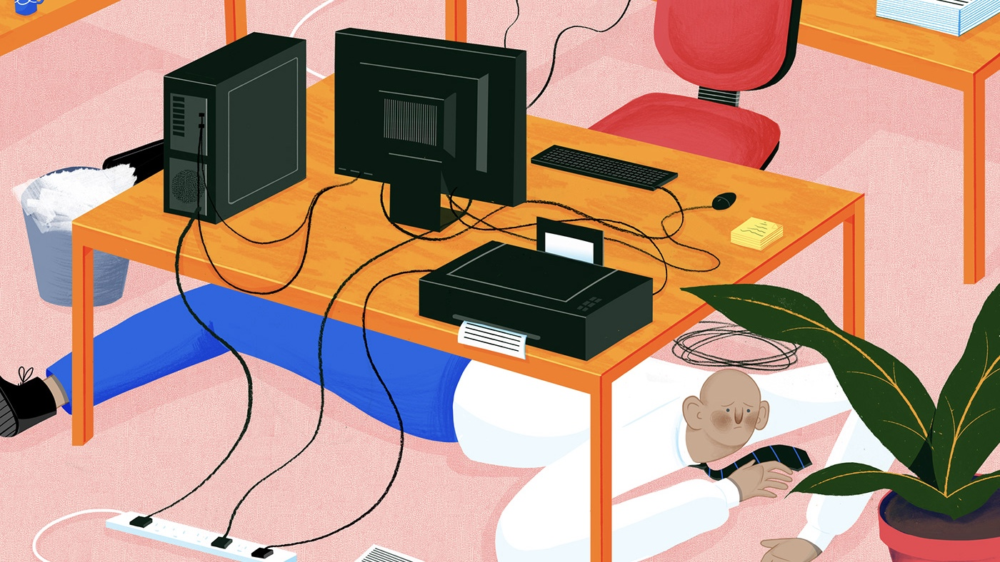

Topic 4: Telemedicine
Telemedicine
Telemedicine is a modern take on finding services. One big issue that professionals face today is that they cannot take the time to actually go their provider's office to seek the mental services that they need. Telemedicine is a tool in which you can talk to your provider over the phone or through video conferencing. Some telemedicine apps even allow you to text, or "chat", with your doctor. This allows professionals to still seek the help that they need from the comfort of their own home, while they are at work, or really any place that one has access to a phone or internet.
Generally with telemedicine, you will need to pay a copay in order to speak to the doctor. This copay may be higher than what you would pay to see this doctor in person, but it is higher because you are paying for the convenience of being able to see this doctor whenever and wherever you are. If you have questions about your telemedicine program, it's important that you speak to your insurance carrier before using this program.